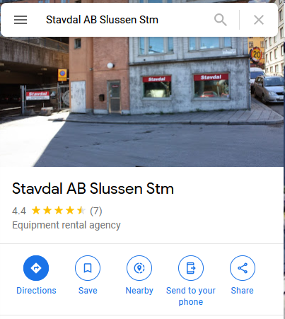
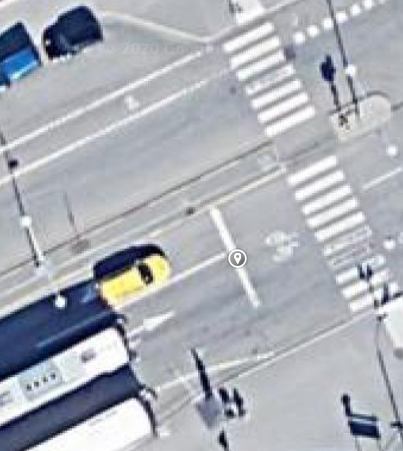
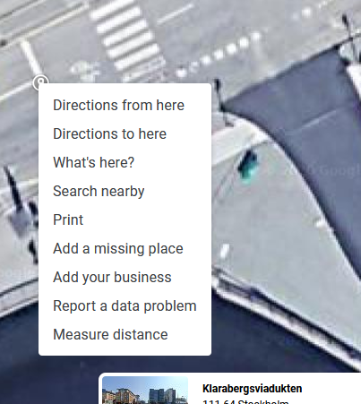
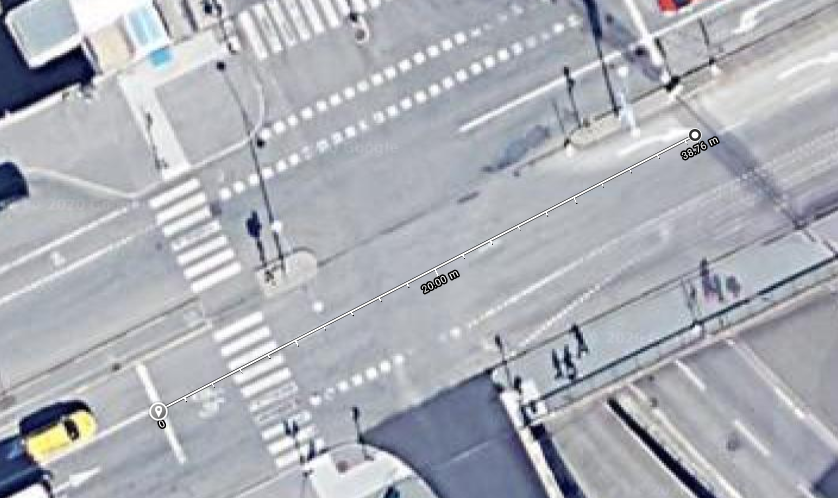

Open the map
Use the map location provided by clicking on the map.
Go to the map
Firstly, click on the map in the question and this will open in a new page. Make sure you're in satellite mode and that you have turned off labels by clicking the menu in the top left and then click "Labels off". Now zoom in until you can see the intersection clearly.

Click on a starting point
Make sure you're using the satellite view and that you've zoomed in so you can clearly see the stop line of one of the roads you're measuring from.
Click on the map
When you are zoomed in enough to see the stop line at the intersction, left click on the intersection stop line to drop a pin.
Select "Measure distance"
Right click on your pin to begin measuring distances.
Right click on the pin
Now right click on the pin you created and select "Measure distance".
Measurement
Click perpendicular to the opposite stop line keeping your measurement as straight as possible.
Find the distance
Move your mouse pointer so you are in-line with the opposite stop line and left click on the map. This will trace a distance for you in feet or metres. You can also click on the second pointer now and move it so it lines up more accurately with the opposite stop line. Use this as your intersection distance for your calculations. Click the image to enlarge.
